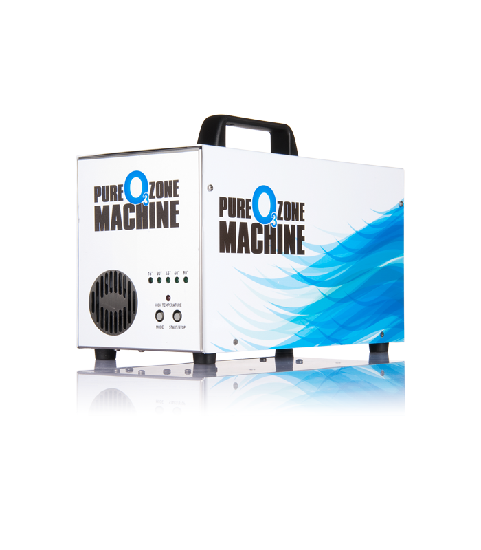

Озонирането позволява премахване и контрол на микробиологични и химически замърсители и летливи органични компоненти,
алергени (прах, акари и полени), замърсяващи частици, неприятни и токсични миризми.
Отстраняването на неприятните и вредни миризми (цигарен дим, застояло, миризми на изгоряло, подправки, домашни любимци и т.н.)
става на принципа на разграждане на молекулите, които въздействат на нашето обоняние като миризма.
В зависимост от времето за въздействие и концентрацията на озон, органичните молекули могат да бъдат разградени до базовите съставки - въглероден диоксид, азот и вода.
Изключително важен е фактът, че озонът отстранява причинителя, тоест премахва миризмата, а не я замаскира с друга.
Получава се траен ефект без остатъчна химия. Изключително чиста технология, при която остатъчния озон се саморазпада до кислород.
Озонът, освен че премахва неприятните и токсични миризми без остатъчни химически продукти във въздуха, дезинфекцира и обеззаразява.
При употребата на озонатора за премахване на по-леки миризми, се приема, поддръжката да се извършва на всеки 2-6 месеца,
а за унищожаването на по-тежки такива – на всеки 4-5 седмици.